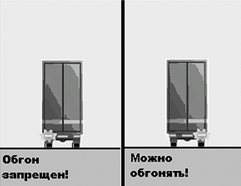

Гористая местность
Совет № 119 Будьте готовы к тому, что в горной местности может произойти ухудшение самочувствия. И на всякий случай купите таблетки от укачивания
В горной местности на каждые 100 км пути приходится 700–800 поворотов (на равнине, для сравнения, всего 10), плюс нужно учитывать постоянный спуск/подъем, а это изменение давления. Следовательно, ваших пассажиров может укачать. Лучше еще в самом начале путешествия купить таблетки от укачивания и принимать их во время поездки (обычно каждые 4 часа).
В том случае, если вас и ваших пассажиров не укачало, могут появиться другие неприятные последствия акклиматизации: утомляемость, закладывание ушей и головная боль.
Совет № 120 Подъемы в горной местности достаточно крутые, поэтому, если у вас не очень мощный двигатель, рекомендуется выезжать на подъем на одной и той же передачеСразу выберите передачу, которой бы «хватило», чтобы выехать на подъем. Как правило, это вторая или третья передача. Лучше на самом подъеме не переключаться, чтобы не скатиться вниз. Думаете, я шучу? Попробуйте въехать на крутой подъем на загруженном «опеле» с объемом двигателя 1,4 литра, и вы поймете, о чем я говорю. Скатиться-то, может, и не скатитесь, но вы можете просто остановиться на подъеме.
Спуск гораздо коварнее подъема. Нельзя катиться вниз, удерживая машину тормозами, – быстро перегреются колодки, и тормоза станут неэффективными. К тому же если тормозная система автомобиля не предназначена для экстремальных условий (большинство новых дешевых «иномарок»), то из-за контакта с горячими тормозными механизмами может закипеть тормозная жидкость – тогда тормоза вообще исчезнут.
Поэтому на спусках нужно тормозить двигателем, то есть включить вторую передачу (предварительно нужно сбросить скорость до такой, чтобы была приемлемой для второй передачи) и контролировать как ускорение, так и замедление автомобиля педалью акселератора. Для еще большего замедления можно включить первую передачу (не на всех автомобилях это выйдет). Если вам при спуске приходится постоянно подтормаживать, то вы неправильно выбрали передачу и вам нужно переключиться вниз.
Если у вас АКПП, тогда придется понижать передачи в ручном режиме. У вас такого нет? Тогда нужно перевести АКПП в режим 1, 2 или 3 или (если и этих режимов нет) нажать кнопку отключения «овер-драйв».
Совет № 121 Если на горной дороге тормоза перегрелись и отказали, нужно тормозить двигателем и попытаться всеми возможными способами остановить машину в улавливателеКогда машина остановится, поставьте ее на заднюю передачу. Если улавливателя нет, тогда нужно прижаться бортом к отбойнику или скале. Не беспокойтесь, если вы немного ее помнете. Главное – не зацепить других участников движения, а то придется и свою машину ремонтировать и чужую. Кстати, как только заметите отказ тормозов, включите аварийку, чтобы вас заметили другие участники движения.
Совет № 122 Если на горной дороге поворот плохо просматривается, для того чтобы вписаться в поворот и не выйти навстречную полосу, лучше сбросить скорость до минимальнойИногда (например, при поездке на гору Ай-Петри) приходится ехать со скоростью всего 5-10 км/ч! Но этого требует безопасность – во-первых, повороты закрытые и вы не видите, что делается за поворотом; во-вторых, иногда повороты до такой степени крутые, что вы не можете преодолеть их с большей скоростью.
Иногда горные трассы оборудуются большими зеркалами, устанавливаемые на внешней обочине поворота. Они помогают заглянуть за поворот, но такие зеркала, к сожалению, устанавливаются не всегда.
Горные повороты коварны тем, что не сразу ясен радиус закругления. Например, вы можете якобы вписываться в плавную кривую, а через несколько секунд вам придется повернуть автомобиль на 180 градусов. Поэтому, если поворот плохо просматривается, лучше сбросить скорость до минимальной, чтобы в писаться в поворот и не выйти на встречную полосу.
Совет № 123 Если на горной дороге вы собираетесь обогнать грузовик, но не уверены в совершаемом маневре, следите за сигналами водителя грузовикаПодъем. Вы плететесь за грузовиком или другим крупногабаритным автомобилем и боитесь пойти на обгон, потому что не видите, свободная ли встречная полоса. Если за рулем впередиидущего автомобиля вменяемый водитель, он подаст вам специальный сигнал (рис. 10):
• левый поворот – обгон запрещен, на встречной полосе кто-то есть;
• правый поворот – встречная свободна, можно обгонять.

Рис. 10. Сигналы грузовиков.
Имейте в виду, дураков на дорогах много, я рекомендую не обгонять до тех пор, пока вы сами не убедитесь в безопасности маневра.